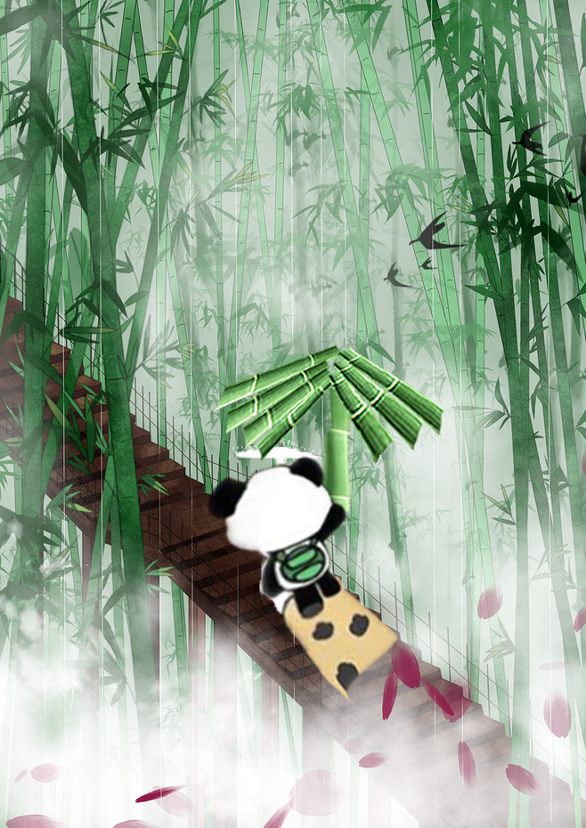

“Fantasy Panda”, Photoshop Composite Image, 2019
It is one of the series of Hyperreal Pandas' Residence that I made. My idea for this one is that I often wonder if the pandas will be confused if they live in sugar cane fields because bamboo and sugar cane are very similar. Therefore, I used a Panda to link these two very close elements and collage them together to more vividly highlight their differences.
“Fantasy Panda”, Photoshop Composite Image, 2019
This work is part of the series of Hyperreal Pandas’ Residence I made. I have anthropomorphized the panda, representing me to travel and explore the bamboo forest. Also, I imagine exploring the panda habitat.